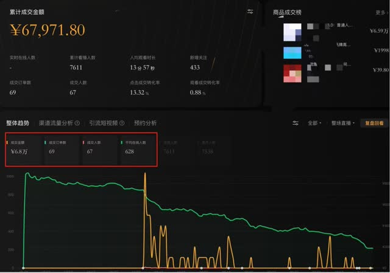
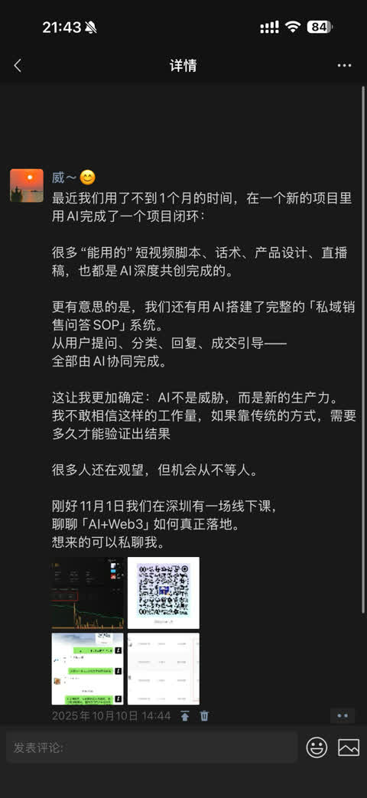
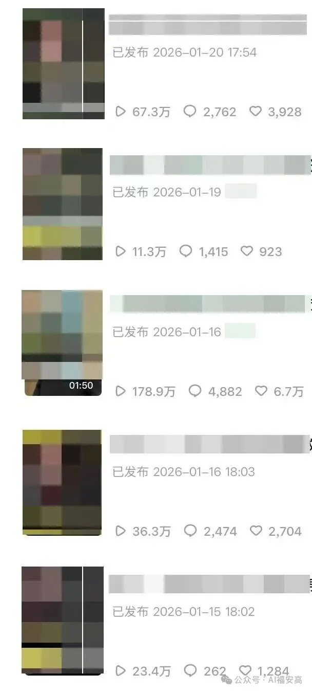
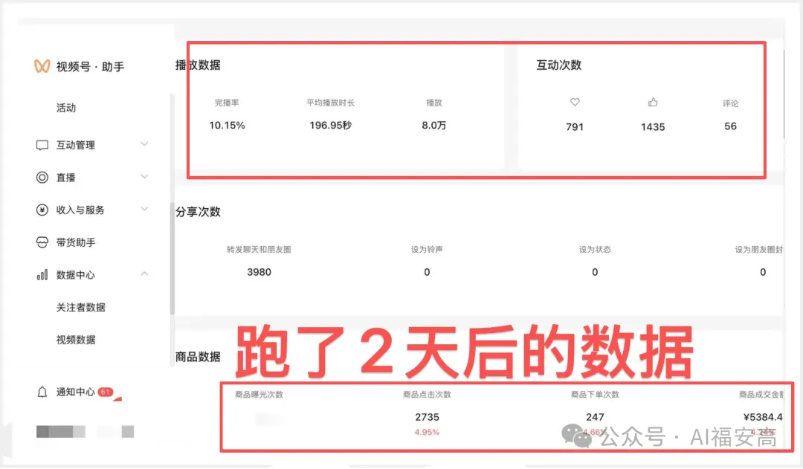
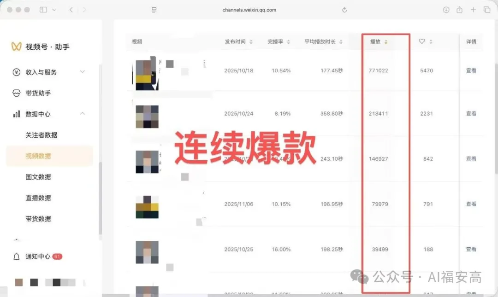
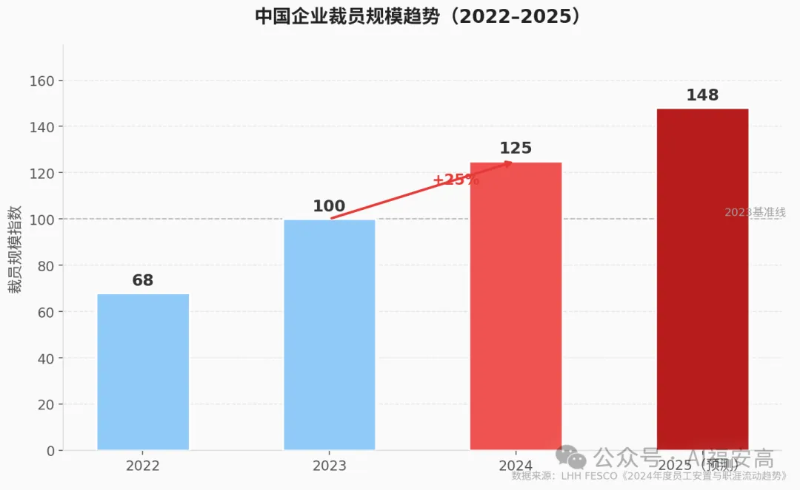
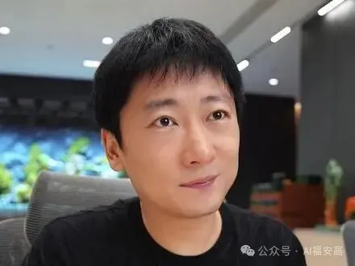

Claude Code 从零上手：普通人也能用的AI工作流
从安装到第一次让AI帮你写逐字稿
唯二杠杆：AI ＋ 自媒体。
这里是我分享给普通人的一人公司实战干货——不是理论，是我自己放弃两万底薪之后，真踩过的坑、真跑通的方法。
案例库
影视摄影出身，做过IP孵化公司的项目组长，服务过二三十个老板级IP——咖啡、Web3、餐饮、医美、中医、乳业……不同赛道，逻辑不一样，但底层的判断方式是通的。
不到1个月时间，在一个新项目里用AI跑通了一个完整闭环：短视频脚本、话术、产品设计、直播稿，很多"能直接用"的内容是AI深度共创完成的。更关键的是，我们用AI搭建了一整套「私域销售问答SOP」系统——从用户提问、分类、回复到成交引导，全部由AI协同完成，还做了"专家模式"和"销售模式"两种应答策略，根据用户画像自动切换。
下面是当时真实的后台数据和系统截图——第一张是其中一场直播的真实成交数据（¥67,971.80，69单成交），不是月度汇总，月流水的200万+是多场直播和多个转化渠道累计的结果，如实说明，不拿单场数据冒充月流水。


先看懂名词，再学会用工具，最后把工具用在做号这件事上——三层依次往下看，不用一口气啃完。
不是词典体，是"看完就懂、能跟人聊"的白话解释——每个词配一个生活化类比，再告诉你普通人在哪会用得上，不讲数学原理。
每个工具三行说清楚：干什么用的、国内能不能直接打开、怎么开通。先分清楚哪些不用翻墙，别一上来就卡在打不开这一步。
OpenAI出品，用户量最大的AI对话工具，写作、编程、分析都能顶，综合能力最全面。
开通：官网 chat.openai.com 注册账号，免费版够日常用，Plus订阅 $20/月解锁更强模型。
本站教学主打的工具，写作和长文本理解突出，也是"Claude Code"这类编程智能体的底座。
开通：官网 claude.ai 注册，免费版有额度限制，Pro订阅解锁更多用量。
谷歌出品，跟Gmail、谷歌文档打通得好，处理图片和长文档能力强。
开通：gemini.google.com，用谷歌账号直接登录。
字节跳动出品，国内可直接用，速度快、免费额度大，还能语音对话，日常聊天写作够用。
开通：豆包APP或官网 doubao.com，手机号一键注册。
月之暗面出品，主打超长文本处理，扔一整本书进去也能帮你总结，国内团队做的。
开通：kimi.moonshot.cn，手机号注册即可用。
百度出品，中文语境理解和国内本土知识（政策、本地生活）覆盖较好。
开通：文心一言APP或官网，百度账号直接登录。
阿里出品，跟钉钉、淘宝等生态打通较好，办公场景用得多。
开通：通义APP或 tongyi.aliyun.com，淘宝/支付宝账号可登录。
嵌在Notion笔记软件里的AI助手，边记笔记边让AI帮你润色、总结、翻译。
开通：Notion账号内直接开通，按月付费叠加在原订阅上。
说一句话就能自动生成一整套PPT或网页，不用自己一页页排版。
开通：gamma.app 注册，免费版有生成额度。
科大讯飞出品，语音识别是强项，适合录音转文字、会议纪要这类场景。
开通：讯飞星火APP或官网，手机号注册。
AI绘图里画面质感最强的工具之一，适合做封面图、海报这类需要"好看"的场景。
开通：官网订阅，最低约10美元/月，目前主要在Discord里使用，有一定上手门槛。
字节跳动出品，国内可直接用的AI绘图/视频工具，操作简单，中文提示词理解好。
开通：即梦APP或官网 jimeng.jianying.com。
快手出品，国内AI图片+视频生成工具，视频生成这块口碑不错。
开通：klingai.com，手机号注册。
开源AI绘图模型，免费、可自己部署，但需要一点技术门槛（或用集成好的网页版）。
开通：本地部署，或找国内的第三方网页服务商。
AI视频生成和剪辑的老牌工具，很多AI短片创作者在用。
开通：官网 runwayml.com 注册，免费版有生成额度。
国内最主流剪辑软件"剪映"自带的AI功能，AI配音、AI字幕、AI特效都在里面，做短视频的人基本都在用。
开通：剪映APP内直接使用，大部分功能免费。
OpenAI出品，文字生成视频的代表性工具，效果惊艳，但目前使用门槛和费用较高。
开通：随ChatGPT高级订阅逐步开放。
本站反复提到的AI编程智能体，能直接帮你操作电脑完成任务，不只是聊天回答。
开通：需要Claude账号+订阅，命令行工具官方文档有安装教程。
AI编程编辑器，很多程序员在用，能一边写代码一边让AI改。
开通：官网 cursor.com 下载客户端。
国内团队做的通用AI智能体，能自主完成"上网查资料+做PPT+写报告"这类复杂任务。
开通：官网注册，早期阶段可能需要排队。
国内团队做的AI应用搭建平台，不用写代码也能把AI工具串成自己的工作流。
开通：dify.ai 注册，有免费版。
字节跳动出品，拖拖拽拽就能做出自己的AI机器人，零代码门槛。
开通：coze.cn 注册即可用。
把AI能力嵌进表格里，自动分类、自动生成内容、自动打标签。
开通：飞书内直接开通，无需额外安装。
前两层是基础，这一层是实战——Claude Code、Skills、人设提示词、内容Prompt库，怎么用在做号的每一步上。
Claude Code、Skills、智能体怎么用在做号的每一步上。这一类目前还没有对应资料，先留位置，不编内容凑数。
Claude Code 从零上手：普通人也能用的AI工作流
从安装到第一次让AI帮你写逐字稿
我用的自媒体 Skills 清单
选题、脚本、演示画板，一步步怎么串起来
复制进任意AI工具，直接开始对话——不是让AI答题，是让AI扮演一个思维框架跟你对话。
HUMAN 3.0 中文提示词
四象限人生发展评估框架，中文版
点一下文本框，全选后复制：
HUMAN 3.0 官方英文提示词
同一套框架的官方英文原版
点一下文本框，全选后复制：
查理芒格商业级顾问提示词
用芒格的思维框架审视你的定价假设
点一下文本框，全选后复制：
100个实用AI功能提示词，按场景分了10个模块。
起号、写文案、账号怎么长期做，具体怎么动手。
不是"多写多练"这种正确废话，是具体的判断标准。
我用AI一周写出10条百万播放量文案！（附提示词和教学）
我写的很多百万爆款内容，被同行抄过很多次……今天想说一个可能会被骂的观点：新人阶段要学会"聪明地抄"。

我写的很多百万爆款内容，被同行抄过很多次。有时候连措辞都懒得改就直接发出去了。
说实话，习惯了。
但也正因为这样，我反而想说一个可能会被骂的观点：
（原文此处有一张信息表格，未迁移，详见飞书原文）
很多自媒体大博主私底下都这么干，但没人敢公开说。大家都想抄，但没人告诉你怎么才算是正确的抄——就是那种抄了又没抄的感觉。
我说的抄，不是复制粘贴，而是一种学习和重组的过程。
为什么新人阶段要学会聪明地抄？
我认为90%的新手，根本没办法独立完成原创。这就好比你还没学会写字，就要去做书法大师——路径本身就不科学。临摹，是必须有的一个阶段。
做原创需要极强的市场洞察力，而这恰恰是新手最缺的东西。你以为的好内容，发出去可能没人看。但聪明地抄，是向市场已经验证过的爆款去学习，成功率直接就上去了。
那"正确的抄"，红线在哪？
有两样东西，绝对不能碰：
第一，封面。封面是一个人内容的视觉身份证，搬走就是抄袭。
第二，观点。观点是一个人的知识产权，把别人的洞察原封不动说成自己的，这不叫借鉴，这叫剽窃。
除此之外，其他的东西，你都可以借鉴。
那到底怎么抄才算没抄？
我总结了一个方法，叫跨界组合法。
很多人理解的"抄"，就是发现一个人的内容爆了，然后复制一个一模一样的。这是大忌。不能在一个人身上薅，这是基本常识。
正确的做法是：找四个博主，分别对应四个不同的借鉴点。
（原文此处有一张信息表格，未迁移，详见飞书原文）
一个爆款内容的构成，无非就是这四个维度。你把 A、B、C、D 各取所长，拼在一起，那就是你真正的原创。
写不出来怎么办？用AI，但要用对
可能有人要问：标题借鉴过来了，但我写不出同等质量的文案，怎么办？
拿着这个选题，让 DeepSeek 给你输出十个不同角度的观点，你的任务只是从里面挑出最对的那个。十个里面，总有一个能打动你。
但这里有一个很多人都踩的坑——把需求甩给AI，说"帮我写一篇自媒体起号的文章"，收到一堆没有灵魂的通稿，发出去没人看，然后得出结论：AI没用。
问题不在AI。在于你给的指令，根本没告诉AI你是谁、在对谁说话、要达到什么效果。
提示词不是一段话，是一个结构。
我之前给一个头部IP写过一份完整的写作提示词，放出来给大家看看真实的长什么样：
（原文此处有一张信息表格，未迁移，详见飞书原文）
这份提示词跑出来的内容，视频号单条播放量超过77万，互动次数5470。


拆解这份提示词：哪里动，哪里不动
整份提示词本质上只有五个部分，我来逐一标出来：
（原文此处有一张信息表格，未迁移，详见飞书原文）
前四层存起来，以后每次只填第五层。这就是你的AI写作SOP框架。
但这只是起点，不是终点
很多人拿到这份模板，直接扔给AI，发现出来的东西"还是不像自己"，然后放弃了。
这很正常。
因为这份模板是我写给另一个IP的，不是你的。它里面没有你的经历、你的语气、你说话时那个特有的节奏。
真正属于你的提示词，不是复制来的，是用出来的。
具体怎么做？
拿这份模板，填上你的主题，让AI跑第一稿。你看完之后，会发现有些地方不对——语气不像你、某段逻辑跳跃、结尾太软。
把这些"不对"的感觉写下来，告诉AI怎么改，跑第二稿。
再看，再调，跑第三稿。
当你觉得"这篇对了，这就是我想说的话"——把你这一路提出的所有修改意见，反哺回提示词里，更新第四层的语言风格描述。
这个更新后的提示词，才是你自己的。
（原文此处有一张信息表格，未迁移，详见飞书原文）
最后说一句：
如果你是新手，前20条内容，不要有任何心理负担。大胆用跨界组合法，聪明地借鉴，持续迭代。等你积累够了经验、建立起自己对市场的判断，原创自然就来了。
那时候你才会真正明白，原创不是一开始就有的东西，是抄出来的。
你现在做的是哪个赛道？起号最难的一步是什么？ 欢迎评论区说说，我每条都看。
为什么你写出来的文案永远有AI味
任何一篇脚本都由两层组成：知识结构（讲了什么）和元结构（管理观众此刻的状态）——大多数人只会分析知识结构，这就是AI味的根源。
元结构分层
原始案例
来自 2026-05-29 对话：
"每次给到你别人的一篇文案，你会把这个拆分一下，但不会分析里边哪些是真正能够打动人的。能够真正打动人的通常不是那些充满哲学的话，而是就像我们前面讲的中间层激励或情绪刺激，你没有分析这些，只是分析它，我把它理解为知识结构，你只会分析这些，所以你写出来的稿子就会很奇怪。"
"接下来说的重点一定要仔细听。这句话其实很重要，是有人情味的。"
"你能看到这里，就说明你已经打败了95%的人，因为正常完播率在5%左右，说明你打败了95%。你看这种句子，就可以保留下来，里边的知识点可以怎么样。"
"我一般讲一个话题，会给你一个完全不相干的话题内容，结构我特别想用。"
"是元结构。"
任何一篇脚本都由两个独立层组成：知识结构（在讲什么内容）和元结构（与话题无关、维持观众情绪状态的句子）。
元结构的核心特征：把它放进任何话题的脚本里都成立，它不属于任何知识点，它管理的是"观众此刻的状态"而不是"内容的逻辑"。
人在听别人讲东西时，处理的不只是信息——同时还在处理关系。关系层的问题是："这个人理解我吗？我值得继续听吗？现在还有没有更好的事情去做？"
知识结构解决"讲了什么"，元结构解决"他凭什么继续听"。
这两层是平行运作的，互不替代。一篇只有知识结构的脚本，信息完整但缺乏关系信号，观众接收完内容但不产生情绪，也不会互动。
元结构之所以是跨话题可迁移的，是因为它操作的对象是观众的注意力和情绪——而这些与话题无关，是人的基本运作机制。
分析别人脚本时：
写脚本时：
只保留知识结构、改掉所有元结构：脚本信息完整，但变成一篇讲义，观众可以读但不会被打动，不会产生互动冲动。
只保留元结构、改掉所有知识：脚本依然有人情味，依然能维持观众情绪，只是没有实质内容交付。——这说明元结构是独立运作的，它不依赖知识内容存活。
这也解释了为什么相同话题的两篇稿子，干货量一样，但一篇有人看完、一篇没有：元结构密度不同。
语言学视角（Jakobson 接触功能）
接触功能（phatic function）是语言六大功能之一，专门负责建立和维持交流渠道。"能听到我吗？"、"你还在吗？"是最纯粹的接触功能句。脚本中的元结构句子是接触功能的内容化版本——它们用实质感更强的话语完成同样的"确认你还在这里"的任务。
认知神经科学视角（注意力资源管理）
注意力是会耗尽的资源。前额叶持续处理信息会产生疲劳，导致注意力游走（默认模式网络激活）。元结构句子的功能是在注意力即将飘离的节点发出"重新激活"信号——"接下来这段是重点"等于告诉大脑"现在要重新调动前额叶资源了"。
戏剧学视角（直接面向观众）
戏剧里有个技法叫"aside"（旁白）：演员暂时跳出剧情，直接跟观众说话。这个瞬间打破第四堵墙，观众感觉被直接看见。脚本里的元结构句子做的是同样的事——"你能看到这里说明你打败了95%的人"这句话不在知识层运作，它在直接和观众建立一对一的关系。
元结构库是复利资产。每一条从别人脚本里提炼出来的元结构句子，存入库后可以无限次复用，适配任何话题。
知识层每次都要重新研究；元结构层每次都在消耗已有库存。库越大，写新脚本的边际成本越低，质量反而越稳定。
长期来看，元结构库是内容创作者真正的"护城河"——因为它沉淀的是对人性的理解，不是对某个话题的了解。
反方一：好内容不需要情绪维持技巧，元结构是平庸内容的补救措施
Steel-man 版：真正优秀的内容本身就具有内驱力，观众因为对内容本身的兴趣而留下，不需要"接下来说的是重点"这类外部刺激。大量使用元结构是在用技巧弥补内容不够好的缺陷。
回应：注意力维护不是情绪操纵，而是对"人有有限带宽"这个现实的尊重。Feynman讲座、Jobs产品发布会都大量使用元结构——不是因为内容差，而是因为他们知道听众是人不是机器。真正的区别在于元结构是否真诚：技巧性地套用和真实地关注观众，观众能区分出来。
反方二：元结构句子一旦被广泛使用就会失效，形成"话术识别"免疫
Steel-man 版："你看到这里已经打败了95%"这类句子在抖音上现在已经是滥用状态，很多观众看到这句话会下意识判断"这是在套路我"，反而产生抵触。元结构库建得越完善，滥用风险越高，最终跟没有元结构库一样失效。
回应：这是对"提取原句"的批评，不是对"元结构原则"的批评。正确的提取方式是提取功能，不是复制句子。"你能看到这里"的功能是"认可观众的坚持并给予身份认同"——这个功能永远有效，但实现这个功能的具体句子需要持续迭代，不能固化。
关于变现、时间分配、要不要接咨询的真实思考，必看。
2026年没工作，可能是你这辈子最好的一件事
怎么把"被裁"这件事，转成"一人公司"的起点
如果你正待业在家，或者有一份工作，但想找一个新出路，这篇文章你一定不能错过。
因为2026年，会成为所有一人公司、超级个体起飞的节点。
你已经错过了08年的房产，错过了15、16年的微博、公众号，错过了19年的短视频。如果还想错过接下来的2026，那你可能就错过了最后一次给所有普通人公平翻身的机会。
如果你觉得这都没有吸引力，那就划走。留下来的，我们继续。
（原文此处有一张信息表格，未迁移，详见飞书原文）
在开始之前，我先问你几个问题，摸着良心回答：你现在的工作，到底是为自己的履历打工，还是在为公司的财报打工？如果你被裁了，你带走的是市场认可的核心能力，还是一堆没办法变现的内部经验？
想明白这几个问题，再看我接下来说的话。
为什么说打工的路越走越窄？
这几年有一个趋势正在加速：AI正在大规模替代白领工作。
被替代的不是那些高端的、创造性的、战略性的岗位。AI卷走的，恰恰是最常规的白领工作——那些做标准化判断、处理重复信息、负责中间传导的岗位。
这不是危言耸听。
（原文此处有一张信息表格，未迁移，详见飞书原文）

▲ 数据来源：LHH FESCO《2024年度员工安置与职涯流动趋势》
你认为的那条职业路径——从专员到主管，再到经理——正在被系统性地拆掉。你努力往上爬的那个位置，是AI最先落脚的地方。
第二个原因，是公司从制度上就不希望你晋升。因为公司的利益从一开始就和你是冲突的。公司想用最低的成本买你最大的价值，而你想用最小的付出换取最高的工资。
公司的最优解是什么？两件事。
第一个是去技能化——把所有复杂流程变成标准化的SOP，让你只负责其中一个环节，变成一颗螺丝钉。相比于雇佣一个越来越贵的你，公司更倾向于直接买你的服务。
这就是近几年外包、零工、项目制合作越来越普遍的原因。企业早就想明白了：买人不如买服务。而你的幻想，还停留在期待公司给你提供一条终身成长的路径上。
（原文此处有一张信息表格，未迁移，详见飞书原文）
（原文此处有一张信息表格，未迁移，详见飞书原文）
那路到底在哪？为什么说2026年没工作，反而是普通人最好的事？
一人公司的门槛，降到了历史最低点
过去我们个人创业最大的障碍是规模——你就一个人，不可能同时搞定战略、创意、营销、客服，你会被活活累死。要么你招人，发工资也可能把你拖死。
现在2026年，AI已经彻底改变了游戏规则。
第一个：生产力变了
过去多做一条视频，就得多拍素材、多做剪辑，生产成本是有上限的。现在AI已经接管了文案、图片、视频的大量执行工作，你的生产成本被压缩到只剩工具使用费。
一个人的成本，撬起过去十个人的产能。
（原文此处有一张信息表格，未迁移，详见飞书原文）
第二个：渠道变了
过去是酒香也怕巷子深，你需要广告费，需要渠道费。但现在，一个人的个人IP，就可以影响整个产品的销售渠道。
你的内容产出本身就是广告，你的IP就是你最好的招牌。你在公众号、抖音、小红书上持续输出，积累的每一个关注者都是潜在客户。不需要投广告，不需要给平台交渠道费。
第三个：信任变了
过去大家信任的是公司、品牌、规模。现在观众信任最多的是个人IP，以及它背后的价值观。
观众越来越倾向于信任一个活生生的人，而不是一个冰冷的组织。你看董宇辉，你看刘润，你看各个细分领域里那些有真实感的创作者——他们能卖出东西，不是因为广告做得好，是因为读者觉得"这个人是真的"。
（原文此处有一张信息表格，未迁移，详见飞书原文）
（原文此处有一张信息表格，未迁移，详见飞书原文）
▲ 数据来源：Carta 全球创始人报告
一个普通人，怎么在2026年建立自己的一人公司？
给你四个建议，每一条都是真的能落地的。
第一：立刻停止海投简历
海投简历，是你在用过去时代的旧思维，祈求一个未来持续缩水的职业生涯。
未来真正确定性的机会，不在岗位里，而是在问题里，在需求里。搞钱的本质是面向市场解决问题。
所以不要再打磨简历了，开始打磨你能给客户提供的价值。
具体怎么做：
（原文此处有一张信息表格，未迁移，详见飞书原文）
第二：丢掉打工脑，换上老板脑
被动失业最可怕的，从来不是没收入，而是你的大脑还在等活干。
打工脑的逻辑是：等别人告诉我做什么，我再做。老板脑只关心三件事：我卖什么、怎么卖、钱怎么收。
老板脑要搭建的，是一个持续盈利的体系。你现在要把百分之百的时间，都投入到这三件事上——因为你是你一人公司的CEO。
最小的起步动作：先把"表达—销售—交付"这三个环节跑通一次，哪怕只赚了500块。
（原文此处有一张信息表格，未迁移，详见飞书原文）
（原文此处有一张信息表格，未迁移，详见飞书原文）
第三：把AI当第一个员工，不是替代品
你之所以感到焦虑，很可能是因为你看着AI越来越强，却不知道怎么用它。
但你从来不是在跟AI竞争，你是在跟那些会用AI的人竞争。
真正会用AI的人，是把AI当员工来管理的。员工需要你给他明确的任务、清晰的背景、具体的输出要求。AI也一样。你给AI的指令越清晰，它给你的结果越好用。
（原文此处有一张信息表格，未迁移，详见飞书原文）
指挥AI的能力，会在未来十年成为你的核心竞争力。立刻停止焦虑，开始学会使用它。
第四：重建你的安全感
你现在所有的迷茫，都源于失去了那份工作给你的安全感。但公司让你安全的同时，也让你动弹不得。
出来之后，最难熬的不是没钱，是没有那个月底准时到账的数字给你的踏实感。这种不适是真实的，不要假装它不存在。
但你要明白：这是你从"租来的安全感"切换到"自建的安全感"必须经历的过渡期。
给自己设一个新的安全感指标，不是月收入，而是：你今天有没有做一件让自己在市场上更值钱的事？
今天写了一篇文章发出去了——有没有。
今天完成了一次付费交付，对方说有用——有没有。
今天又积累了一个真实的潜在客户——有没有。
（原文此处有一张信息表格，未迁移，详见飞书原文）
（原文此处有一张信息表格，未迁移，详见飞书原文）
今天写的每一篇文章，回答的每一个问题，引流的每一个粉丝，都在持续构建你的个人资产，都在给你的安全感添砖加瓦。
打工的天花板在塌，一人公司的门槛在降。
如果你已经开始感到憋屈，那个憋屈不是矫情，是信号。信号告诉你，留在原地的成本，已经开始高于出来的成本了。
你现在感受到的那股劲，别浪费。
一人公司深度解读
一人公司到底是怎么运转的，具体拆解
我放弃底薪2万的薪资去做一人公司。
结果发现，连"一人公司"是什么，我都理解错了。
这个词从2024年开始在国内突然火起来。大多数人看到它，脑子里浮现的画面是：一个人，一台电脑，卖课，收钱，自由。听起来很美，门槛看起来也不高。
但这个理解，跟一人公司的真实面目，差得很远。
我自己从媒体大厂出来，放弃了底薪两万的工作，到现在摸索将近一年。这篇文章，是我对这件事最完整的一次梳理——它到底是什么，适合谁，大多数人卡在哪里。
不是鸡汤，是我真实踩过的坑。
一、你理解的一人公司，可能是错的
一人公司这个概念，英文叫 Solopreneur，是 Solo（独立）和 Entrepreneur（创业者）的合成词。它在国外兴起的时候，说的不是"规模小"，而是一种完全不同的商业决策结构。
核心只有一句话：决策权高度集中在一个人身上，通过杠杆放大，形成可持续运转的业务。
注意这三个关键词。
决策权高度集中，意味着这家"公司"的上限，就是你这个人的认知上限。你对行业的判断、对产品的直觉、对客户的理解，直接决定了业务能走多远。这是一人公司最大的优势，也是最大的风险——没有人替你兜底，也没有人帮你纠错。
通过杠杆放大，意味着你的时间和精力不能线性变现。你不能靠卖时间赚钱——那叫自由职业，不叫一人公司。真正的一人公司，需要找到可以放大你产出的杠杆。目前最主流的两条路：一是AI，二是自媒体。前者放大执行效率，后者解决流量成本。
可持续运转，意味着你建立的不是一次性的项目，而是一套可以反复跑通的业务模型。接一单是做生意，能持续接单、持续交付、持续迭代，才叫一人公司。
（原文此处有一张信息表格，未迁移，详见飞书原文）
对照这三点，你就能理解为什么大多数人对一人公司的理解是错的——他们把它等同于"知识付费"，等同于"9.9引流课"，等同于"做自媒体卖课"。
这些可能是一人公司的某种形态，但绝对不是它的全部，也不是它的本质。
二、三种常见形态，和最容易踩的坑
一人公司在国内目前有三种主要形态，每一种背后都有一套完全不同的逻辑。
内容型
通过持续输出内容，积累信任，最终完成商业转化。这是目前最多人走的路，门槛看起来最低，实际上最难。
很多人把内容型简单理解为"先涨粉再变现"。但这个逻辑是倒的。内容型的本质，是先让别人喜欢你这个人，再让别人信任你的判断，最后才是买你的东西。顺序不能乱。
跳过前两步直接卖，叫割韭菜。完成了前两步才卖，叫品牌。
咨询型
为特定客户提供一对一的深度服务，本质是把你的判断力打包出售。
这里有一个关键误区：咨询型不是卖时间，是卖判断力。你花一个小时帮客户梳理清楚一个方向，值的钱不是你那一个小时，是你用多少年积累出来的、能在那一个小时里发挥作用的经验和眼光。
如果你只是按小时收费，你做的是自由职业，不是咨询。
产品型
把你的能力或方法论打包成标准化产品，一次开发，多次销售。复利价值最高，但门槛也最高。
产品型需要以内容型或咨询型作为地基。没有积累足够的用户信任和市场认知，直接上产品，大概率是死路一条。
（原文此处有一张信息表格，未迁移，详见飞书原文）
三种形态没有高下之分，但有先后顺序。大多数人适合从咨询型或内容型起步，在真实交付中积累判断力，再往产品型进化。
三、四个真正的门槛
做一人公司，真正卡住人的不是资金，不是技术，是四种能力。缺任何一种，都会卡死在某个阶段。
第一关：选择力
经济学里有个概念叫机会成本——你选择做A，就放弃了做B的可能性。一人公司的资源极其有限，选错方向的代价远比大公司高得多。
选择力不是"找到热门赛道"，而是判断：这个市场有真实需求吗？我有没有能力在这里建立差异化？这件事三年后还值得做吗？
选择大于努力，这句话在一人公司里是字面意思，不是励志口号。
第二关：销售力
这里的销售，不是传统意义上的推销。是通过内容和表达，让陌生人相信你能解决他的问题。
本质上，你发的每一篇内容都是销售漏斗的一部分——它在筛选那些真正需要你的人，同时过滤掉不适合的人。这套逻辑想清楚了，内容就不是为了涨粉，是为了找到精准的潜在客户。
没有销售力，再好的产品也只能烂在仓库里。
第三关：交付力
好的交付，不是完成任务，是让客户感知到价值。
举个例子。小区门口的小超市和山姆，都能买到可乐。但山姆让你付200多块的年费才能进门，它的交付是什么？是替你做了筛选——这里的东西虽然不一定最好，但不会差，放心。你不可能只买可乐进一次，这就是品质感带来的复购。
（原文此处有一张信息表格，未迁移，详见飞书原文）
很多人做一人公司，初期给客户的方案太宏观，全是策略层面的东西，客户看完觉得很好，但不知道怎么落地，最后不了了之。普通客户要的不是地图，是下一步该迈左脚还是右脚。
第四关：心力
这是四关里最难的，也是最少人提的。
在长期没有正向反馈的孤独中，保持清醒，保持方向感，不断修正，继续前进。这种能力，没有一个专业名词，我姑且叫它"心力"。
在公司里，你做对了有人夸，做错了有人纠正，有明确的绩效反馈。但一人公司没有这些。你可能连续两周发内容零互动，连续一个月没有新客户。这种时候，你靠什么判断自己是走对了还是走偏了？
（原文此处有一张信息表格，未迁移，详见飞书原文）
你有没有感受过那种状态——内容一直发，没什么反馈，不知道是方向错了还是还没到时候，每天都在一种低度焦虑里熬着？
这个坎，是一人公司最真实的日常，也是大多数人最终放弃的真正原因。
四、什么样的人，真的适合做一人公司
说完门槛，说筛选。这不是鼓励，是帮你判断。
一个很反直觉的结论：长期在公司里做执行层的人，做一人公司会非常难。
不是因为执行层能力差。是因为执行层的工作逻辑是：有人给你任务，有人给你反馈，有人兜底。你只需要把交代的事做好。这套肌肉练得越熟，越难适应一人公司的环境——因为一人公司里，没有人给你任务，没有人给你反馈，也没有人兜底。
适合做一人公司的人，有一个共同特征：习惯在模糊中前进，并且能从失败里提取信息，而不是陷入自我怀疑。
（原文此处有一张信息表格，未迁移，详见飞书原文）
（原文此处有一张信息表格，未迁移，详见飞书原文）
我自己做自媒体已经四年，从大厂出来之后依然花了相当长的时间才真正想清楚自己的产品方向。最开始以为AI教学是未来，深入之后发现自己在那个方向没有足够的壁垒。后来把自己在自媒体大厂做操盘的经验和AI结合，才找到真正适合自己的切口。
这个过程不是一蹴而就的，也不应该是。
五、一个先有鸡还是先有蛋的问题
最后说一个真实的矛盾，也是我自己一直在面对的。
一人公司的上限是你的认知。但认知的提升，需要真实的市场反馈。而真实的市场反馈，需要你先做出来东西，先去交付，先去碰壁。
（原文此处有一张信息表格，未迁移，详见飞书原文）
这是一个真实的循环困境。没有办法在"想清楚"之后才开始，因为你永远不可能靠想象把认知提升到足够高的水平。
唯一的破法是：带着不完整的认知开始，用真实的交付结果来修正认知，再带着更新的认知继续做。
第一次定价一定不准。第一个产品一定不完整。第一次交付一定有很多可以改的地方。这些都没关系。
重要的是，你经历了这个循环。经历过之后，"不知道自己值多少钱"的茫然感，会越来越少。不是因为你变得更厉害了，是因为你有了真实的市场反馈作为参照。
（原文此处有一张信息表格，未迁移，详见飞书原文）
你在公司里积累的那些经历，不会直接变成市场竞争力。但它们可以被重新翻译——翻译成别人愿意付钱的东西。这个翻译的过程，没有捷径，只能自己走。
做一人公司，首先你要学的是做自媒体，不是学技术
技术不是门槛，表达能力才是
大多数人第一反应：不对吧，技术都没有，拿什么单干？
这个反应本身，就说明你走的还是打工人的逻辑。
你身边有没有这种人，或者你自己也是这种人——技术扎实，干活认真，兢兢业业干了很多年，收入涨了一点，但如果让你想象他（或者你自己）要是自己当老板的样子——感觉永远差那么点感觉，不知道差在哪。
这篇文章说清楚，看完相信你也能成为老板。
一、你走的那条路，从设计之初就不是通向老板的
想做老板，别从员工开始，从老板开始。你用二十年爬到高层，公司用两周找到替代你的人，理由只有一个——你太贵了，有人比你年轻，比你便宜，比你听话。
为什么这么简单的道理，正常人只需要花时间想一下就能想通，但是为什么大部分人还是会选择既定的路径？
是因为从来没有人允许你停下来想。学校没有，父母没有，身边的人也没有。那这篇文章你就更需要认真、带着思考读完！
我们先来想想大家从小到大被灌输的那套路径。
学校教你听话、考高分、拿文凭。父母说找份稳定工作，别瞎折腾。身边的人，大部分也在走同一条路——上学、找工作、熬资历、往上爬。没有人跟你聊怎么找客户，没有人告诉你怎么定价，因为他们自己也没做过。
这套体系没有错，它有它的逻辑。人口基数大，需要有人进工厂，需要有人进公司执行，需要有人把事情做好。学校批量输出的，本来就是这个体系里合格的执行者，这是它的目标，也是它的设计。
但老板，不是这套体系培养出来的。
史蒂芬·柯维在《高效能人士的七个习惯》里说过一句话，很扎心：许多人拼命埋头苦干，到头来却发现，追求成功的梯子搭错了墙。
大多数人学完技术出来，想一步一步往上爬，爬到有一天能自己出来单干。但真正的做法是反过来的——你要先站到老板的位置上想问题，再往回推你需要什么。老板不需要自己会剪辑、会设计、会写文案，他需要知道怎么找到会这些的人，或者怎么用工具把这些事搞定。梯子要先靠对墙，再往上爬，不然爬得越高，离目标越远。
管理学之父彼得·德鲁克说过一句话：效率是"以正确的方式做事"，效能是"做正确的事"。大多数人用一生的时间，把事情做得越来越正确，却从来没有停下来问：我做的这件事，方向对吗？
老板需要的那套东西，跟学校教的完全是两回事。德鲁克还有一句话说得很透：企业只有两件事要做，一个是营销，一个是创新。翻译成普通人的语言就是：我有什么能卖，卖给谁，怎么让人找到我。
这三件事，学校教不了，父母不知道，身边的人，如果你是个普通人，你周围大概率也没有人真正做成过这件事、又愿意认真教你的。
所以大多数想做一人公司的人，还是本能地走打工人那条路——先把技术练好，等准备好了再说。但那个"准备好了"，永远不会来。因为你练的那套能力，解决的是"怎么把事做好"，而老板需要解决的，是"做什么才值钱"。这是两道完全不同的题。
（原文此处有一张信息表格，未迁移，详见飞书原文）
二、自媒体不是你的作品展示台，是你唯一的获客渠道
先说一个前提。做一人公司，你不能靠卖时间赚钱——那叫自由职业。真正的一人公司，需要找到能放大你产出的杠杆。对于普通人而言，目前最主流的 2 个杠杆：一是 AI，放大执行效率；二是自媒体，解决获客成本。这篇文章重点讲自媒体这条。关于一人公司到底是什么、有哪些形态、真正的门槛在哪里，可以去看我上一篇的完整拆解。
[“一人公司”深度解读](https://mp.weixin.qq.com/s?__biz=MzIxNzc2NjU2OQ==&mid=2247484131&idx=1&sn=dfa96bf371ad28df52e2f635052cdc0b&scene=21#wechat_redirect)
好，回到我们今天要讲的自媒体，很多人做自媒体的心态：先发内容，等涨粉，等有了粉丝再想变现。
发了三个月，涨了几百粉，没有任何收入，然后开始怀疑自己是不是不适合做自媒体，是不是选错了赛道，是不是要去学个新技能。
不是赛道的问题，是顺序搞反了。
自媒体的本质是渠道——让潜在客户发现你、了解你、信任你、从你这里买东西的通道。但如果你还没有能卖的东西，这条通道通向哪里？通向数字，通向平台的活跃度数据，通向一个对你的收入没有任何意义的粉丝量。
没有产品，你的内容做得再好，本质上是在帮平台打工。你的内容吸引来了用户，平台数据好看了，你得到的，是那一点虚荣感和持续消耗的时间。
正确的顺序只有一个：先找到能卖的产品，再用自媒体把人引进来。
抖音影视解说刚火那两年，我就是这么干的。用影视制作的专业背景切入，300 块一单，配音剪辑文案全包，一条一条私信那些刚起号的小账号。没有先研究怎么做内容，没有先打磨个人品牌，是先找到有人愿意买单的东西，再用自媒体让更多人找到我。
那段时间给了我一个很清醒的认知：渠道是工具，产品才是目的。顺序搞反了，越努力，离收入越远。
三、找产品，别死盯大 V，去找比你快一步的普通人
说到找产品方向，大多数人的本能反应是：去看头部大 V 卖什么，研究他们的逻辑，然后照着干。
这个思路本身没错，但对象选错了。
粉丝百万的人，他的产品能卖出去，背后是什么？是多年沉淀下来的信任，是无数次迭代跑通的成交路径，是完全不同体量的流量基础。你现在一样都没有。你照着他的产品形态、定价策略、内容风格去做，就像刚拿驾照的人要去跑 F1——方向不是不对，是你连油门刹车的配合都还没摸清楚，上去就死。
真正应该盯的，是比你快一步的普通人。
同一个赛道，粉丝量和你差不多甚至比你还少，但已经在卖东西，已经有人买单——这种人。他不是大 V，他没有光环，但他跑通了一个最小的真实闭环。这个闭环，比任何课程和方法论都值钱，因为它是市场用真金白银验证过的。
找到这种人，把三件事拆透：
（原文此处有一张信息表格，未迁移，详见飞书原文）
这三件事拆清楚，你就有了真实的市场情报——什么东西有人要，什么价格有人付，什么内容逻辑能跑通。这不是靠感觉猜出来的，是别人用时间和试错帮你验证过的。
四、学，不是抄表面，是把别人验证过的路，装进你自己的真实里
说到这里必须说清楚一件事：你学的不是别人的内容，是底下的逻辑。
他用什么结构钩住人——你学这个结构。他把一个模糊的能力打包成一次清晰的具体交付——你也这么干。他定价 999 元市场接受了、复购出现了——你知道这个区间在这个赛道是安全的。这些是可以学的，也值得学。
但他的经历，他踩过的坑，他客户说的那些真实的话，他内容里那个独特的视角——这些东西假不了，也不该假。读者感受得到，客户更感受得到。一旦你的内容全是别人的支架，没有自己真实的东西在里面，读起来就像一篇从网上复制下来的模板，没有体温。
我做影视解说外包那三个月，把成交路径跑通了，也把外包供应链搭起来了——找北方低 GDP 城市有专业录音室的大学生，一单成本 120 到 150，我收 300，每单净赚 180。结构是清晰的，逻辑是跑通的。但做着做着我发现，这件事里没有任何属于我的东西，我是个信息差中介，一旦这个差价消失，什么都没了。主动放弃，不是因为做不下去，是因为知道这条路的尽头在哪。
别人的框架给你路，你自己真实的东西给你护城河。两者都要有，缺一个，都走不远。
（原文此处有一张信息表格，未迁移，详见飞书原文）
亚马逊创始人贝索斯有一句话，我一直记得：我唯一可能后悔的事，是从未去尝试。
很多人一直在研究，一直在准备，一直觉得还不到时候。但市场不等你准备好。那个比你快一步的普通人，他也没有准备好，他只是先动了。
做一人公司，入口是自媒体，不是技术。自媒体的前提是有东西卖，有东西卖的前提是找到有人买单的方向。这个方向，不需要你从零发明，去找比你快一步的普通人，拆透他，然后把你自己真实的东西装进去。
就这一步，先走出去。
关于我 & 下一步
想深入了解我再往下看，不感兴趣直接去知识星球也行。
首先这个人我相信大家做过知识付费的都认识吧，没错他就是参哥，我的前前前老板！
你可能听说过参哥这个名字。钳工出身，中专学历，靠卖海参起家，后来做抖音IP孵化，4年公司营收据说超过10亿。网上对他的评价从来就没统一过。有人说他是割韭菜的江湖骗子，课程全是正确的废话；有人说他改变了自己的命运，是真正懂商业的人。百度前副总裁璩静花5980元上了他三天的操盘课，课后发布了一系列争议视频，最终被李彦宏秒批离职申请，"五千块学费换来千万年薪归零"的段子传遍全网。
但今天我不想跟你讨论参哥这个人对不对，值不值。因为我在他公司待了整整一年半，我想说的是：那段时间让我看到了一些东西，跟他本人没什么关系，但跟我自己的成长关系很大。

先说说我之前是个什么样的人。在参哥公司之前，我在杭州萧山的一家做信息流的公司上班，工作和生活分得极清。有一次，老板在5点50分叫我们开会，我坐下来，6点整，我直接站起来说：我先走了。然后离开了会议室。那时候我觉得，时间到了就走，这叫有原则。
后来我来到参哥公司，这是我来杭州的第二家公司，他们做的是抖音商业IP孵化，我进去的身份是：剪辑。
参哥公司大部分业务是做商业IP，我当时负责的核心项目是李潇——T97咖啡的创始人。这个人卖货卖了将近500亿GMV，拿过雷军的投资，还有新加坡淡马锡的融资，总共大概1.9亿美元左右。后来陆陆续续，我服务过的老板加起来有二三十个。接触多了我发现：他们回答问题的深度，有时候还没有我想得深，但他们的资产和我比，差距大到没法形容。所以我一直在想：他们为什么比我赚得多？最后我想到一个更本质的东西：他们比我多了一种无畏的精神——就是不怕。
刚入职只是一个剪辑，大概三四个月之后身份就发生了转变，到离开的时候是项目组长。这个过程中有一个关键动作：付费。为你认为优秀的人付费，一两千块钱左右。付费的目的不是为了拿到知识，而是为了让自己真正学到——你花了真金白银，才会认真消化、认真对标、认真实践。当你付费了，你就会产生正心正念。
你在什么情况下愿意主动花更多时间？通宵打游戏你愿意，通宵工作你不愿意——但我认为：你要发生逆袭，就一定要加班。我当剪辑的时候，公司规定每天剪三条视频，6点前能完成，但我一般在公司待到12点，很多时候凌晨两三点才回去。我身边那二三十个从烟台跟参哥来杭州的操盘手，一个月差不多五万到十万，我那时候差不多一万——每天和这群人在一起，你会非常认真地反思自己：我怎么能变成他们？
我从不认为那9000块钱是参哥公司给我的，我认为那是这个社会根据我当下能力给我的定价。先证明自己，先加班，先把能力提升上来——这个社会都是明码标价的，但前提是你先狠下心要求自己，先让别人看到你的能力。
我当上项目组长之后不久就选择了离职，原因很直接：钱。至于参哥值不值得信任、他的课有没有用——这件事我没有资格评价。我只知道，同样的环境，有人拿到了东西，有人什么都没得到。这个问题的答案，每个人进去之前就已经决定了。
看完这些，想看我具体能帮你什么？

我的产品
不装大而全，就两样东西——一个自己学，一个直接问我。
产品一 · 知识星球
提示词库之外的完整方法论、案例复盘、我自己每天在做什么、遇到问题怎么判断——这些不放在免费区，放在知识星球里，社群内直接提问我会回。
你的账号具体卡在哪一步，20分钟直接聊透——不是通用建议，是看着你的账号给判断。适合已经动手做了、卡在具体问题上的人，不适合还没想清楚要不要开始的人。